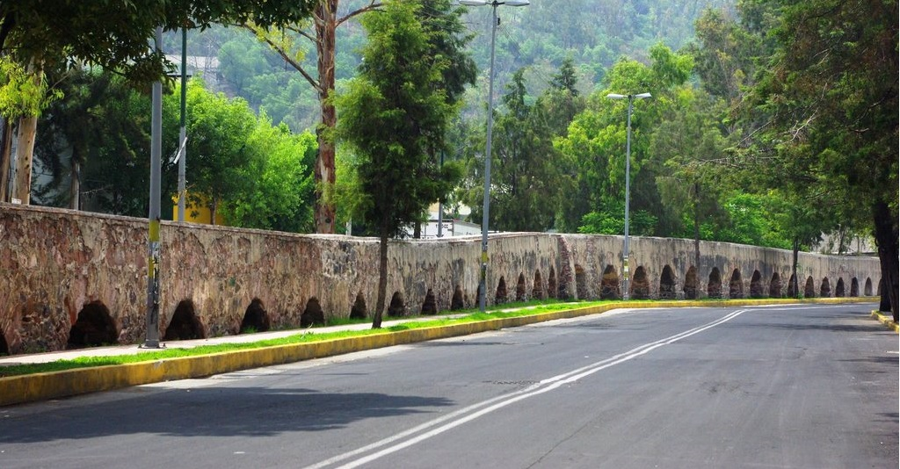
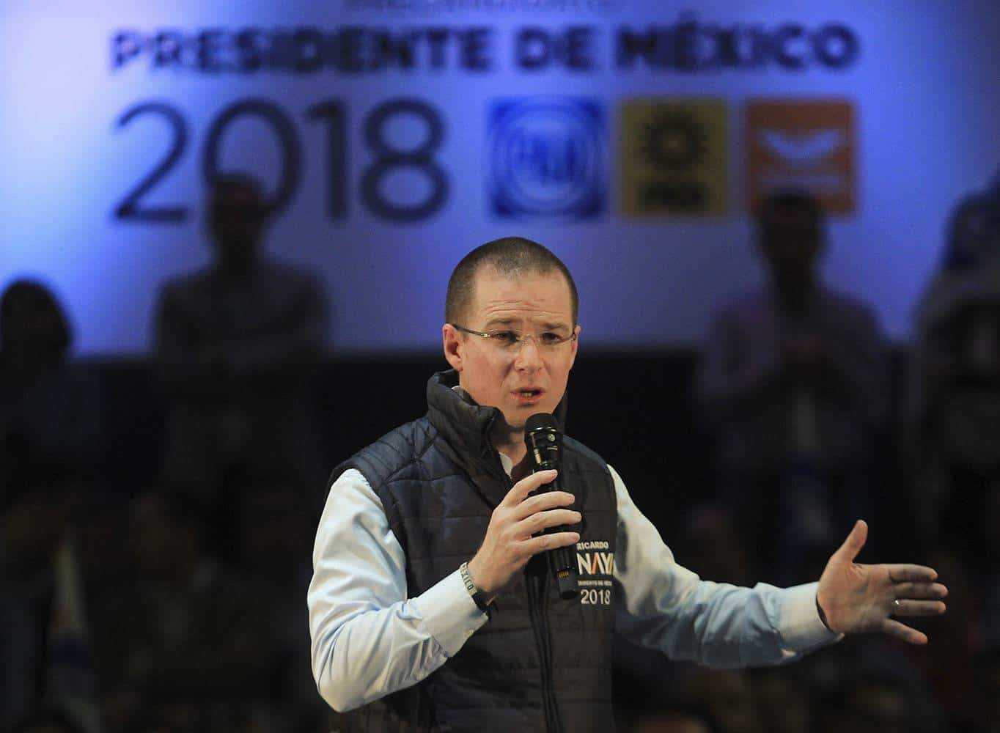
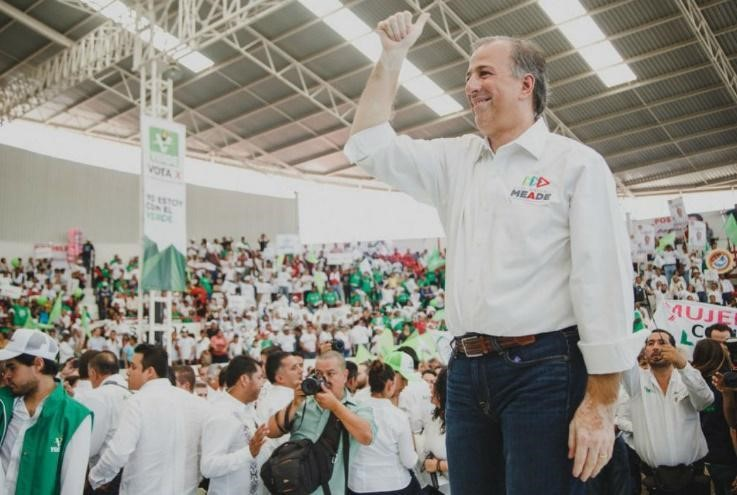
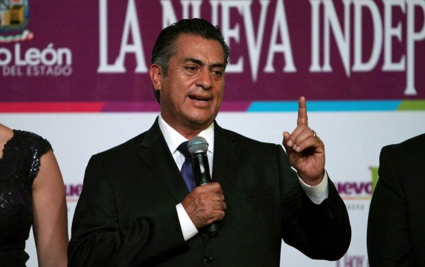

Columnas de Opinión
Voto Responsable
Junio 2018

open_in_new
Acueducto: El hotel de...
Junio 2018
Me alegra presentar la revista “Azteclaim” como resultado del esfuerzo, compromiso y dedicación de los Gobiernos Estudiantiles, siendo muestra de lo que logra el alumnado en Plantel Azteca como resultado de la implementación del Nuevo Modelo Educativo Azteca, el cual brinda los espacios para el desarrollo de actividades como ésta.
Agradezco al Lic. Ricardo Salinas Pliego y al Lic. Esteban Moctezuma Barragán el apoyo a las iniciativas que promueven el desarrollo de las habilidades de nuestroalumnado, así como a los directivos y personal administrativo de Plantel Azteca por el apoyo en la realización de las actividades.
En la revista encontrarán información de interés para todos los miembros de la familia y de la comunidad educativa, datos importantes sobre educación,recomendaciones culturales y fotografías del acontecer diario en Plantel Azteca.
Azteclaim es la revista estudiantil de Plantel Fundación Azteca creada gracias al programa de los Gobiernos Estudiantiles que busca implementar la autonomía y la libertad de expresión en toda la Comunidad Azteca.
Nuestro principal objetivo es fomentar un espacio de expresión donde se sientan libres de decir lo que piensan sin miedo a ser juzgados. Es una revista hecha de alumnos para alumnos, es decir, buscamos que todos se sientan identificados con el contenido motivándolos a hacer ustedes mismos sus propias publicaciones dentro de la editorial.
¿Qué valores promovemos?azteclaim@gmail.com
¿Qué queremos lograr con esta revista? Ser una publicación que ofrezca una mirada a la vida estudiantil y sea diferente a las gacetas escolares tradicionales, podrás encontrar desde artículos y entrevistas hasta galería de imágenes. Con este proyecto lograremos unir aún más a esta excelente institución. ¡Crea el cambio y se parte de Azteclaim!Dirección
Iris Paola Lozano Vite
Profa. Wendy Sánchez Hernández
Escritores Permanentes
Hilda Fernanda Guerrero López
Demian Valentín García Quintana
Héctor Ulises Lázaro
Diego Raúl Marín García
Escritores Invitados
Ramón Alejandro Ruíz Pérez
Erik Alatriste Romero
Luis Arturo Espinosa de los Monteros Hegmann
Sandra Paola Landin Hernández
Michelle Denisse Mendizábal Velázquez
Fotografía y video
Donato Cabrera Martínez
Johan Ortiz Arredondo.
Edición
Profa. Verónica Espíndola Villena
César Mauricio Arellano Velásquez
Mariana Noriega Mendiola
Junio 2018
Junio 2018
Junio 2018
Junio 2018
| Fecha | Evento | Hora |
|---|---|---|
| 21 / 22 de Junio de 2018 | AztecMun 2018 | 8:00 AM a 7:00 PM |
| 25 de Junio - 2 de Julio de 2018 | Exámenes Finales de 2° y 4° Semestre | 7:50 AM - 9:30 AM |
Junio 2018
Junio 2018
Junio 2018
Junio 2018

Es curioso empezar esta columna, con un título así, podría decir que tal vez te hayas reído, pero dejando de lado las risas que esto te haya provocado y teniendo también tu atención, empezaré a dar mi punto de vista de estos candidatos y las futuras elecciones.
Es preocupante saber que el futuro de México esté en manos de estos 4 candidatos, que lo único que hacen en los debates, es desenmascarar al contrincante, no digo que no den propuestas, pero critican más de lo que dicen.
Les daré un resumen de las propuestas de cada uno y su futuro gabinete:
Andrés Manuel López Obrador
Como en sus dos campañas previas, López Obrador ha propuesto eliminar los fueros que protegen a los altos funcionarios -incluido el presidente-, una política de austeridad y acabar con la inseguridad y la "mafia del poder" que, asegura, sólo ha dejado corrupción y un país con un 43 por ciento de pobres.
Sus intenciones de echar para atrás las reformas del actual gobierno, revisar millonarios contratos energéticos y fijar los precios de los productos agrícolas han despertado nerviosismo entre los empresarios.
El político de 64 años ha propuesto una amnistía para delincuentes. Aunque ha negado que se sentará a negociar con los capos del narcotráfico, sí, dijo que perdonaría a quienes entraron en ese mundo por necesidad.
En un intento por combatir la violencia que azota al país, López Obrador, alcalde de Ciudad de México entre 2000 y 2005, ha prometido relanzar la Secretaría de Seguridad Pública -eliminada en 2013 por el presidente Enrique Peña Nieto- y fusionar a la Policía, la Marina y el Ejército en una "Guardia Nacional".
Crear la Zona Estratégica Norte; en energética, aumentar la generación hidroeléctrica, acelerar la transición en energías renovables y rehabilitar las centrales termoeléctricas.
En infraestructura se propone pavimentar las cabeceras municipales en Oaxaca, construir y modernizar la infraestructura carretera, asegurar disponibilidad de agua potable y construir un tren de mediana velocidad que conecte la zona turística de la Riviera Maya.
En este eje también se incluye integrar un sistema complementario de aeropuertos para la Ciudad de México, mismo que estaría distribuido entre el Aeropuerto Internacional de la misma y el Aeropuerto Militar de Santa Lucía.
En materia de política laboral la plataforma destaca la formación profesional y capacitación para el trabajo, aumento del salario mínimo, la facilitación de la negociación colectiva y la recuperación de la inspección del trabajo.
Ricardo Anaya
Expresidente del derechista Partido Acción Nacional (PAN), Anaya ha propuesto la creación de un Ingreso Básico Universal (IBU) que es una estrategia para para erradicar la pobreza y la desigualdad, poder incrementar y estimular el mercado interno y enfrentar el desempleo El también abogado de 39 años quiere que México pase de una economía de manufactura a una del conocimiento.
Además de acabar con la corrupción, la impunidad, recuperar la paz y la seguridad, Anaya ha propuesto reducir el número de funcionarios públicos y ayudar a los emprendedores.
Propone la reestructuración de la estrategia de combate al crimen organizado, acabar con la corrupción y la impunidad, perfeccionar y fortalecer el Sistema Nacional Anticorrupción, dotar de autonomía constitucional a la Auditoría Superior de la Federación, eliminar la prescripción de delitos como enriquecimiento ilícito, peculado, lavado de dinero y operaciones con recursos de procedencia ilícita, eliminar el fuero constitucional para los servidores públicos, rediseñar el Sistema Nacional de Seguridad Pública a través de una nueva instancia de seguridad ciudadana, separada de Secretaría de Gobernación, reformar el sistema electoral para revisar la cantidad y calidad del gasto público en el sistema electoral, establecer un salario mínimo suficiente.
Destinar mayores recursos para el desempeño de las embajadas y consulados de México en el exterior e incrementar la asignación presupuestal destinada a la protección consular.
Permanente del Consejo Nacional, que se convocará en los próximos días, para dar cumplimiento a lo que establecen los Estatutos y Reglamentos de su coalición. El Presidente Nacional será quien presida todas las Comisiones, y en su ausencia lo hará el Secretario General. Además, el Dirigente Nacional será quien proponga a los integrantes de cada una de ellas, excepto de la Comisión Especial Anticorrupción y de la Comisión para la Transparencia y Reingeniería del Padrón de Militantes, que serán independientes y autónoma.
José Antonio Meade
Durante el período de precampaña, Meade dijo que buscará que las familias mexicanas tengan comida en la mesa, seguridad en las calles, salud y educación de calidad y que sólo quiere servir al país.
El exsecretario de Hacienda del gobierno de Peña Nieto ha propuesto igualar los salarios de hombres y mujeres y que éstas últimas puedan acceder a créditos bancarios sin más requisitos que su palabra.
Además, ha prometido acabar con la corrupción mediante la confiscación de dinero, propiedades y bienes de quienes hayan cometido actos de corrupción, también propone una igualdad de oportunidades, un entorno libre de violencia y discriminación, eliminar cualquier obstáculo que impida a las mujeres alcanzar su pleno desarrollo personal y profesional. Seguridad para que vivan sin miedo, protegidas del acoso y de cualquier tipo de discriminación, compatible la vida familiar y laboral con guarderías de tiempo completo, pretende pasar de 25 mil a 100 mil escuelas de tiempo completo, con comedor, en donde los niños además aprendan inglés, arte, cultura y hagan deporte,comentó ”Haré un impulso sin precedente al arte y a la cultura”, reconocer el esfuerzo de las y los buenos maestros, Cobertura universal de preparatoria. Que garantiza un lugar a todo el que quiera acceder a la educación superior, mayor número de becas, más y mejores fuentes de trabajo, para quienes se integren al mundo laboral.
Jaime Rodríguez Caledrón
¿Quién es Jaime Rodríguez Calderón?
Es un ingeniero agrónomo egresado de la Universidad Autónoma de Nuevo León (UANL), su trayectoria política comenzó a principios de los ochenta en el PRI, donde militó durante casi 35 años. Fue diputado plurinominal de 1991 a 1994 y diputado local de 1997 al 2000, además de presidente municipal de García, Nuevo León.
Como presidente municipal de García intentaron matarlo dos veces por su estrategia de combate al crimen organizado, pese a ello, el candidato independiente dice que “no tiene miedo al narco, pues el miedo sólo te paraliza y te impide actuar”. Aunque militó en el PRI, Jaime Rodríguez dijo que ya no tiene esa soberbia partidista y que del PRI ahora sólo conserva algunos amigos, pues, afirmó que ahora esa institución está peor que nunca. Tras renunciar al partido, en 2014, inició campaña como independiente en busca de la gubernatura de su estado natal, que consiguió en junio de 2015 con 48.8 por ciento de los votos.
Sus propuestas:
Educación
Salud
Economía
Seguridad
Corrupción
Después de presentarles el resumen de las propuestas de cada uno, dejo a tu criterio quién sería para ti, el mejor candidato espero hacerte reflexionar con la intención que hagas un voto responsable, recuerda que el futuro de México no sólo está en tus manos, si no que también estará en manos de alguno de ellos, después de revisar algunas encuestas y ver que en el primer lugar estaba el gran “orador” Andrés Manuel López Obrador, me di a la tarea de investigar más a detalle de nuestro “candidato en potencia” y sus propuestas “Pro y beneficio de la sociedad” y así lograr que vean más a detalle realmente que hay detrás de él, y de su gabinete, por ejemplo criticó la “mafia del poder”, pero recordemos que AMLO formó parte del PRI durante las elecciones de 1988, retomando que el “supuesto” o real avance de Morena y de AMLO en las encuestas, es la preocupación de algunos ciudadanos que, ya dan como ganador de las próximas elecciones a López Obrador, cuando no existen, sondeos de opinión confiables.
Cada ciudadano puede creer lo que les plazca y dar cabida a los miedos que tolere su estado de ánimo. Sin embargo, muchos de los preocupados y futuros electores, no disponen de ideas claras aún para tomar una decisión, porque siendo honestos todos los candidatos tienen algo que pone en duda su fiabilidad ante la sociedad, lo que ha generado que casi un 15 por ciento de los votantes hoy no sabe siquiera si acudirá a votar, o peor aún que es anular su voto.
Por esas razones, sostengo que AMLO perderá la elección presidencial de 2018, todas las encuestas que hoy asustan a muchos, resultan poco confiables, es decir, que preocupados y asustados apoyan sus pensamientos en especulaciones. Porque una vez que estén perfilados los más viables candidatos de los tres principales partidos además de AMLO, José Antonio Meade, Ricardo Anaya y el candidato independiente Jaime Rodríguez Calderón” Bronco”. Y una vez configurada la llamada “Cuarta Opción” una mezcla de independientes y preocupados por una alternativa no partidista, la abundancia de alternativa modificará la oferta y pondrá a cada uno en su lugar. A medida que avanza en Estados Unidos “el desastre llamado Trump”, en México más ciudadanos y futuros electores se percatan del peligro de que un locuaz como llegue al poder. No resultará difícil para ciudadanos y electores identificar quién es el verdadero “Trump mexicano”.
Contrario a lo que muchos suponen, el “desastre llamado Trump” ha alejado cada vez más a los empresarios mexicanos, de la posibilidad de apoyar una aventura delirante como la de AMLO y Morena, el mejor ejemplo es el desastre en que terminó convertido el más reciente libro de AMLO.
Lo cierto es que la batalla por 2018 apenas empieza. Y son muchos los que saben que la verdadera amenaza para México no se llama Trump, sino que la amenaza es el Trump mexicano; el señor López Obrador.
Andrés Manuel López Obrador, precandidato presidencial de la alianza Morena-PT-PES, alguna vez habló con desprecio de la “mafia del poder”, ese grupo de políticos y empresarios, descendientes de otros políticos y empresarios, que siempre quedan acomodados en el poder o cerca de él, pase lo que pase y sea cual sea el bando ganador. Ahora, él se ha rodeado en su “gabinete” de muchos representantes de esos clanes de linaje antiguo, que tanto criticó.
En el entorno de Andrés Manuel López Obrador, así como entre los candidatos que perfila la alianza Juntos Haremos Historia, que lo postula, hay de todo: mujeres y hombres relacionados, por vínculo familiar o de negocios, con los clanes que el precandidato ha identificado como “la mafia del poder”.
Los clanes más poderosos de México, que son los que se colocan en todos los bandos de las convulsiones sociales y procesos políticos, están representados en el “gabinete” que López Obrador.
Para la Secretaría de Turismo, por ejemplo, el precandidato presentó al consuegro de Carlos Slim, Miguel Torruco Marqués, padre María Elena Torruco, esposa de Carlos Slim Domit.
Torruco Marqués ha sido asesor de López Obrador desde febrero de 2017, cuando abandonó la secretaría capitalina de Turismo, en respuesta al reclamo público del jefe de Gobierno de la Ciudad de México, Miguel Ángel Mancera, que lo acusó de ser un “funcionario de medio tiempo”.
Destaca también en ese gabinete la presencia de Marcos Fastlicht Sackler, inversionista de negocios inmobiliarios y de entretenimiento, que desde hace una década se ha enrolado en consejos ciudadanos relacionados con seguridad y derechos humanos. Al margen de su desempeño empresarial y público, este asesor en materia de seguridad es suegro del presidente de Televisa, Emilio Azcárraga Jean.
Propuesta por López Obrador para ser Secretaria de Medio Ambiente, Josefa es también sobrina bisnieta de Tomás Garrido Canabal, iniciador de las políticas antirreligiosas que dieron paso a la Guerra Cristera, y de un linaje que se mantiene en el poder hasta ahora, por ejemplo, con el perredista gobernador de Morelos, Graco Ramírez Garrido Abreu.
Además del equipo cercano y el gabinete, López Obrador presentó a la cantante Susana Harp, sobrina de Alfredo Harp Helú, como coordinadora territorial de Morena en Oaxaca.
La coordinación territorial es una figura partidista creada para anticipar, sin violar disposiciones electorales, quiénes serán candidatos. Y ella buscará llegar al Senado.
Está también perfilado como secretario de Comunicaciones y Transportes, Javier Jiménez Espriú, quien tuvo una larga trayectoria como funcionario en gobiernos priistas. Hijo del general Javier Jiménez Segura, director de Pemex en el sexenio de Adolfo López Mateos.
Como él, con participación política previa, así como por pertenecer a un clan empresarial, está Tatiana Clouthier, hija del excandidato presidencial panista en 1988, Manuel J. Clouthier, que el 15 de enero fue presentada como coordinadora nacional de campaña.
Religión y política
La alianza con el Partido Encuentro Social (PES) despertó críticas en algunos sectores de Morena, debido a las posturas conservadoras que asumen los representantes de dicho instituto político en el Congreso. Sin embargo, como pocas veces se expresa en público, religión y política se entrecruzan también en una candidatura que propone el Partido del Trabajo (PT), el otro aliado, en Nuevo León.
Se trata de la ex presidenta municipal Margarita Arellanes, quien desde 2011 enfrenta señalamientos por su riqueza inmobiliaria y diferentes acusaciones por corrupción, una de las cuales hizo que el PAN le abriera un expediente de expulsión, que no llegó a su fin pues ella renunció al partido, aunque aún enfrenta cargos por el desvío de 7.5 millones de pesos. Asegura que se trata de una persecución política.
Además del escándalo ha patentado su fe cristiana protestante, como aquel 8 de junio de 2013, cuando en una concentración masiva convocada por pastores y en plena ebullición de la violencia en Monterrey, oró: “Yo, Margarita Alicia Arellanes Cervantes, entrego la ciudad de Monterrey, Nuevo León, a Nuestro Señor Jesucristo, para que su reino de paz y bendición sea establecido”, dijo.
Pero cabe recalcar que ella no es la única. Al otro extremo del país, Greg Sánchez y su esposa Niurka Sáliva controlan el PES en Quintana Roo, él como presidente y ella como titular del consejo político del partido. Acusado de lavado de dinero, en plena campaña por la gubernatura, Greg fue detenido en 2010 y al año siguiente obtuvo su libertad por falta de pruebas, cuando ya había pasado el proceso electoral. Con una carrera fincada en su liderazgo religioso, su presencia en dicha entidad ha provocado protestas de militantes del PT.
Sin embargo, el matrimonio que controla el PES local no es el único que causa inconformidad en Quintana Roo.
Reitero, después de toda la información proporcionada los invito a reflexionar para que hagan un voto responsable.
Biliografía
“Arturo Rodríguez García, 24 ENERO, 2018 https://www.proceso.com.mx/519776/en-el-entorno-de-lopez-obrador-personeros-de-la-mafia-del-poder
http://www.sinembargo.mx/15-12-2017/3363368
Junio 2018
Junio 2018
Junio 2018

La Colonia Centro ubicada en la delegación Cuauhtémoc, en la Ciudad de México, es un lugar con una conexión especial a la historia de México, siendo capital del Imperio Azteca (Tenochtitlan fundada en 1325), donde antes se extendía el Lago de Texcoco, un punto importante para la expansión de la corona española en México y el continente americano: el virreinato de la Nueva España (1535-1821). Más adelante, la emancipación del virreinato de la Nueva España (1810- 1821), culminando en su independencia para pasar a ser la capital de los Estados Unidos Mexicanos.
A lo largo de los siglos, la Colonia Centro ha sido sede de eventos importantes, como la Caída del Imperio Azteca (1521), la entrada del Ejército Trigarante (1821), la muerte del expresidente de México, Benito Juárez (1872), la Intervención de los Estados Unidos de América en México (1846- 1848), entre muchos otros sucesos y hechos históricos, también ha sido un centro cultural importante, ya que aquí se encuentra el Colegio de San Ildefonso, cuna de la Universidad Nacional Autónoma de México (UNAM, por sus siglas en español), el Palacio de Bellas Artes y más de veinte museos.
Al caminar por el Zócalo, por Calle Madero (la calle principal que conecta en línea recta al Palacio de Bellas Artes y el Zócalo), por Calle Bolívar (singular por las numerosas tiendas de música), la Alameda, pienso en los pies que deambularon por esas calles, la gente de México, y también en mexicanos destacados, como el Premio Nobel de Literatura de 1990, Octavio Paz (El Laberinto de la Soledad, 1950), el Premio Nobel de Química de 1995, Mario Molina (“Por su trabajo en la química de la atmósfera, particularmente en lo que respecta a la formación y desintegración del ozono”), los pintores Diego Rivera, David Alfaro Siqueiros y Frida Khalo, incluso podemos mencionar al poeta chileno Pablo Neruda (Canto General, 1950), Premio Nobel de Literatura de 1971, él visitó la capital y utilizó su escenario continuo para su inspiración. Son calles con historia, color y una atmósfera rica en cultura, con mucha identidad, es una experiencia increíble caminar por el Centro Histórico, observar su gente, los turistas, la arquitectura europea de la época de la colonia mezclada con la tecnología del Siglo XXI, e imaginar la sangre derramada en sus calles en las guerras pasadas, como la Revolución Mexicana (1910-1921), que fue la primera revolución del siglo XX. Cabe destacar que el Zócalo de la Ciudad de México ha sido testigo no sólo de importantes sucesos históricos, también ha sido utilizado como escenario de diferentes exposiciones multiculturales, como la Feria Internacional de las Culturas Amigas (FICA, celebrada anualmente) y conciertos masivos de agrupaciones musicales internacionales como Paul McCartney, Roger Waters, Manu Chao, Shakira, Justin Bieber, Café Tacvba, Enrique Bunbury, Molotov y Mon Laferte.
En la Colonia Centro se ubican más de cuarenta templos e iglesias de diferentes órdenes religiosas, uno de los más importantes recintos es la Catedral Metropolitana de la Ciudad de México, fundada en 1571, cuya construcción terminó hasta 1813, cimentada en las ruinas de Tenochtitlan; es la sede de la religión católica en México (la principal religión en el país), es un edificio imponente por sus 62 metros de altura, sus diversos estilos arquitectónicos, desde el gótico, el barroco, hasta el neoclásico, en sus criptas se encuentran arzobispos importantes, como Juan de Zumárraga, fundador de la Real y Pontificia Universidad de México, (precursora de la UNAM). Destacando que, en la época colonial, los españoles estaban en estrato social más alto y los indígenas se encontraban en el peldaño más bajo, por ende, no se les permitía entrar.
La Catedral Metropolitana es la mayor catedral de América, actualmente se encuentra en reparación por el sismo acaecido el 19 de septiembre de 2017, además de sufrir como muchos edificios del Centro Histórico, un hundimiento continuo debido al suelo blando del Valle Metropolitano, se estima que, desde su fundación, el Centro Histórico se ha hundido aproximadamente 12 metros.
En mi caso, entré por primera vez a la Catedral con mi madre a la edad de 6 años, en ese entonces y actualmente, me sorprendió la gran cantidad de personas que visitaban el templo religioso, los acabados de oro, las numerosas esculturas que representan a Jesucristo y a diferentes figuras divinas, las columnas de gran grosor que sostienen el edificio y por supuesto, la presencia de la música en forma de un gran órgano, el cual tiene dimensiones de 14 metros de altura, 10 metros de ancho, 3 metros de profundidad, compuesto por 3600 flautas y con 6000 variaciones sonoras, en aproximación. Recomiendo ampliamente visitar la Catedral, ya que es símbolo de la evangelización y conquista de los indígenas del México antiguo, denominado “encuentro de dos mundos”, así como el máximo templo de la religión católica en el país. La vía de llegada más rápida es por medio del Metro de la Ciudad de México, estación Zócalo, línea 2 (código de color: azul).
Este museo se encuentra ubicado en una edificación barroca mexicana del siglo XVIII (1779), fue hogar de la familia Moncada-Jaral de Berrio, el último virrey Juan O’Donojú y de Agustín de Iturbide primer emperador de México.
El museo ofrece exposiciones temporales y permanentes, galería, librería, etc. La mayor parte de las obras expuestas son del arte mexicano, desde el barroco hasta el contemporáneo.
Es un lugar muy tranquilo en el cual el tiempo es relativo, puedes pasarte todo en día dentro del museo y no verías todo lo que hay. El Palacio de Iturbide es un lugar obligatorio para visitar si eres amante del arte o te causa curiosidad.
En mi vista, estaba una exposición de José María Velasco, actualmente su obra se encuentra en el Museo Nacional de Arte (MUNAL, por sus siglas en español), este pintor mexicano se destaca por sus paisajes, donde su musa era el Valle de México, mayormente el Valle de México visto desde Santa Isabel (al norte de la ciudad, cerca de la Villa de Guadalupe), desde que nací hasta los 20 años había vivido cerca de esa zona y al ver sus obras me gusta comparar como se veía la ciudad en el siglo XVIII y como se ve hoy.
Si quieren visitar este lugar solo tienen que caminar desde el Zócalo por Av. Madero casi llegando a la Torre Latinoamericana. Por medio del Metro de la Ciudad de México, las estaciones más cercanas son Bellas Artes y Allende, línea 2 (código de color: azul).
La Torre Latinoamericana es un edificio de 44 pisos construido en 1956, es una maravilla de ingeniería civil, uno de los primeros rascacielos construidos y diseñados para áreas con alta actividad sísmica, como el Valle de México. Ha soportado terremotos como el de 1957, 1985 y recientemente el del 2017, entre muchos otros sismos menores. La “Torre Latino” está inspirada en el Empire State de Nueva York.
A un costado se encuentra el Ex Convento de San Francisco, donde también podemos encontrar un pequeño espacio artístico con exposiciones temporales, al 11 de febrero de 2018, se encuentra una exposición del pintor español, Salvador Dalí.
Calle Madero, o Av. Francisco I. Madero, es una calle muy concurrida, con muchos transeuntes caminando en ella, si quieres dar un respiro y descansar mientras caminas por el Centro, te recomiendo pasar a este coloquio cuya entrada es gratuita y si quieres subir al mirador de la Torre Latino para observar la ciudad desde las alturas, acceder a éste tiene un costo de $110 MXN, que valen la pena.
Puedes llegar desde el Zócalo, caminando por Calle Madero, en Metro, la estación Bellas Artes (línea 2, código de color: azul) o San Juan de Letrán son las más cercanas (línea 8, código de color: verde bandera).
El recinto artístico más importante de México, el Palacio de Bellas Artes existe gracias al expresidente Porfirio Díaz, que encargó la construcción del edificio para celebrar el Centenario de la Independencia de México, inspirado en el estilo arquitectónico de Francia en aquellos años. Su exterior está recubierto de mármol, su interior por murales y pinturas.
El recinto es sede de La Orquesta Sinfónica Nacional, la Compañía Nacional de Danza y la Compañía Nacional de Teatro, las cuales tienen temporadas regulares para presentarse. También, el reciento ha sido sede de presentaciones de íconos de la música latinoamericana como los argentinos Les Luthiers, de la música popular mexicana como Juan Gabriel, de importantes cantantes de ópera como Plácido Domingo y Luciano Pavarotti, sede de presentaciones de piezas de música académica de grandes compositores mexicanos como Silvestre Revueltas, Manuel María Ponce, se han presentado las orquestas filarmónicas de Viena, Moscú, Nueva York, tomas de posesión de celebres presidentes como Gustavo Díaz Ordaz, de homenajes luctuosos, como el del gran escritor mexicano Juan Rulfo (Pedro Páramo, 1955) y el Premio Nobel de Literatura de 1982, Gabriel García Márquez (Cien años de soledad, 1967). En el año 2017 fue sede de la premiere del filme “Coco” de la compañía estadounidense Disney Pixar Animation Studios, este filme animado se inspira en la tradición mexicana del “Día de muertos”.
Es un lugar majestuoso, lleno de arte y belleza, hermoso por fuera y por dentro, un edificio icónico, no solo de la ciudad, sino de todo el país. Es un lugar donde la cultura occidental se mezcla con la cultura mexicana, donde el lenguaje es el arte.
Cuando por primera vez lo visité quedé impresionado, no sabía cómo describirlo, un lugar históricamente mágico, un lugar donde convergían múltiples formas de arte creadas en diferentes siglos de la historia, desde La Flauta Mágica de Mozart, La Consagración de la Primavera de Igor Stravinski, Sensemayá de Silvestre Revueltas, el Danzón No. 4 de Arturo Márquez, hasta las exposiciones temporales que han visitado el recinto, como las esculturas de Miguel Ángel y las pinturas de Diego Rivera y Pablo Picasso. Es un lugar obligado para cualquiera que venga a la Ciudad de México.
Para visitarlo, sólo tienes que tomar el Metro de la Ciudad de México y bajarte en la Estación Bellas Artes (línea 2, código de color: azul), hacen descuento a estudiantes con credencial vigente.
Todos los lugares anteriormente mencionados, son lugares que he visitado personalmente a lo largo de mi vida y que no me canso de visitar, siempre tienen algo diferente que mostrar: música, pintura, danza, escultura, arquitectura, historia, religión, la vida en México a través del tiempo. Son lugares que personalmente me relajan mucho, me hacen pensar en la nada y el todo, dependiendo de mi estado de ánimo, sin duda México es una selva de cultura, rico, exuberante y extenso. El Centro Histórico es un microcosmos que demuestra el macrocosmos que ofrece mi país.